Artillerie & Panzer
23 Einheiten · Untergruppen: Belagerung & Pioniere, Geschütze & Raketen, Panzer & Fahrzeuge. Jede Karte zeigt das Aussehen im Spiel, die Kosten, Stärken und Schwächen, alle Werte und einen Tipp. Das Symbol neben dem Namen ist die Klasse – ihr Name erscheint beim Darüberfahren.
Inhalt – alle Einheiten dieser Seite
Antike (2)

Skorpion Antike · 50 v. Chr.
Bataillon: 4 Fahrzeuge · 350 Punkte/Goldje Fahrzeug: 87,5Römisches Torsionsgeschütz, gespannt mit Sehnenbündeln – Feldartillerie der Legionen.
Präzise Bolzen auf 250 m, die Rüstungen durchschlagen. Schutzlos im Nahkampf.
- Fernkampf bis 250 m (110 Schaden je Treffer)
- Wehrlos, wenn Feinde herankommen – braucht Begleitschutz
- Mindestreichweite 8 m – direkt davor trifft er nichts
- schnelle Reiterei, die die Bedienung überrennt; Gegenbatterie
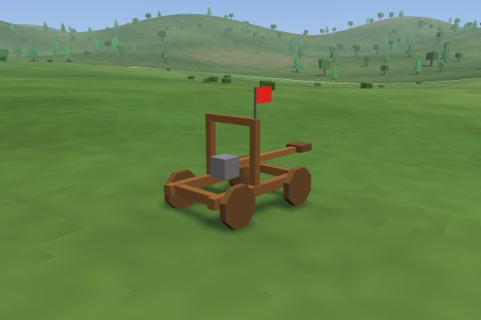
Onager Antike · 350 n. Chr.
Bataillon: 4 Fahrzeuge · 600 Punkte/Goldje Fahrzeug: 150Römisches Wurfgeschütz – benannt nach dem Wildesel, weil es beim Schuss „ausschlägt“.
Schleudert Felsen in dichte Formationen und gegen Mauern. Ungenau, wehrlos im Nahkampf.
- Fernkampf bis 280 m (130 Schaden je Treffer)
- Flächenwirkung: trifft alles im Umkreis von etwa 4 m
- Durchschlägt Panzerung
- Wehrlos, wenn Feinde herankommen – braucht Begleitschutz
- Mindestreichweite 30 m – direkt davor trifft er nichts
- Wenig Munition (14 Schuss) – Lager oder Träger in der Nähe halten
- Langes Nachladen (9 s)
- Langsam (1,6 m/s)
- schnelle Reiterei, die die Bedienung überrennt; Gegenbatterie
Hochmittelalter (5)

Rammbock Hochmittelalter · 1100
Bataillon: 2 Fahrzeuge · 84 Punkte/Goldje Fahrzeug: 42Überdachter Rammbock: Unter einem Dach aus nassen Häuten schwangen Männer einen eisenbeschlagenen Stamm.
Bricht Tore, Mauern und besetzte Häuser in kürzester Zeit. Gegen Soldaten fast nutzlos.
- Durchschlägt Panzerung
- Gefährlich im Nahkampf (20 Schaden je Hieb)
- Stark gegen Mauern, Tore und Gebäude
- keine auffällige Schwäche
- schnelle Reiterei, die die Bedienung überrennt; Gegenbatterie

Tribok Hochmittelalter · 1200
Bataillon: 2 Fahrzeuge · 525 Punkte/Goldje Fahrzeug: 262,5Die Gegengewichtsblide – stärkste Belagerungswaffe des Mittelalters, 100-kg-Steine über 300 m.
Zermürbt Mauern und Türme aus sicherer Entfernung. Riesig, langsam, verwundbar.
- Fernkampf bis 320 m (220 Schaden je Treffer)
- Flächenwirkung: trifft alles im Umkreis von etwa 5 m
- Durchschlägt Panzerung
- Wehrlos, wenn Feinde herankommen – braucht Begleitschutz
- Mindestreichweite 50 m – direkt davor trifft er nichts
- Wenig Munition (10 Schuss) – Lager oder Träger in der Nähe halten
- Langes Nachladen (16 s)
- Langsam (0,9 m/s)
- schnelle Reiterei, die die Bedienung überrennt; Gegenbatterie

Raketenwagen Huo Che (China) Hochmittelalter · 1400
Bataillon: 4 Fahrzeuge · 400 Punkte/Goldje Fahrzeug: 100Ming-zeitlicher Wagen (um 1400) mit Kästen voller Raketenpfeile – eine Salve konnte Dutzende auf einmal abfeuern.
Schnelle Salven ungenauer Raketen mit Splitterwirkung. Langsam und verwundbar.
- Fernkampf bis 170 m (38 Schaden je Treffer)
- Flächenwirkung: trifft alles im Umkreis von etwa 1,6 m
- Wehrlos, wenn Feinde herankommen – braucht Begleitschutz
- schnelle Reiterei, die die Bedienung überrennt; Gegenbatterie
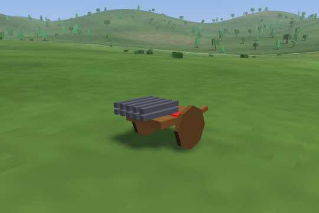
Orgelgeschütz Hochmittelalter · 1430
Bataillon: 4 Fahrzeuge · 524 Punkte/Goldje Fahrzeug: 131Das Ribauldequin bündelte viele kleine Läufe auf einem Karren – eine frühe Salvenwaffe des 15. Jahrhunderts.
Feuert eine verheerende Salve auf kurze Distanz, danach lange Ladepause.
- Fernkampf bis 90 m (70 Schaden je Treffer)
- Flächenwirkung: trifft alles im Umkreis von etwa 2,4 m
- Wehrlos, wenn Feinde herankommen – braucht Begleitschutz
- Mindestreichweite 5 m – direkt davor trifft er nichts
- Wenig Munition (20 Schuss) – Lager oder Träger in der Nähe halten
- Langes Nachladen (14 s)
- Langsam (1,6 m/s)
- schnelle Reiterei, die die Bedienung überrennt; Gegenbatterie

Bombarde Hochmittelalter · 1453
Bataillon: 2 Fahrzeuge · 472 Punkte/Goldje Fahrzeug: 236Riesige frühe Steinbüchse des 15. Jh. – mit ihnen fiel 1453 Konstantinopel.
Gewaltige Steinkugeln gegen Mauern. Lädt extrem langsam und ist kaum zu bewegen.
- Fernkampf bis 260 m (300 Schaden je Treffer)
- Flächenwirkung: trifft alles im Umkreis von etwa 3,5 m
- Durchschlägt Panzerung
- Wehrlos, wenn Feinde herankommen – braucht Begleitschutz
- Mindestreichweite 30 m – direkt davor trifft er nichts
- Wenig Munition (12 Schuss) – Lager oder Träger in der Nähe halten
- Langes Nachladen (25 s)
- Langsam (0,8 m/s)
- schnelle Reiterei, die die Bedienung überrennt; Gegenbatterie
Renaissance (1)

Feldschlange Renaissance · 1550
Bataillon: 4 Fahrzeuge · 550 Punkte/Goldje Fahrzeug: 137,5Leichtes, langes Geschütz der Renaissance – beweglicher als die schweren Kartaunen.
Weitreichende Kugeln gegen Formationen und Mauern, gut zu bewegen.
- Fernkampf bis 420 m (150 Schaden je Treffer)
- Flächenwirkung: trifft alles im Umkreis von etwa 1,8 m
- Durchschlägt Panzerung
- Wehrlos, wenn Feinde herankommen – braucht Begleitschutz
- Mindestreichweite 15 m – direkt davor trifft er nichts
- Wenig Munition (20 Schuss) – Lager oder Träger in der Nähe halten
- Langes Nachladen (12 s)
- Langsam (1,8 m/s)
- schnelle Reiterei, die die Bedienung überrennt; Gegenbatterie
Linienzeit (4)
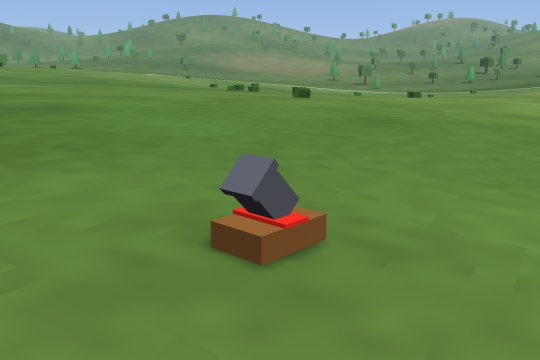
Mörser Linienzeit · 1780
Bataillon: 4 Fahrzeuge · 324 Punkte/Goldje Fahrzeug: 81Kurzrohriges Steilfeuergeschütz – Bomben fliegen über Mauern direkt in die Festung.
Trifft Ziele hinter Mauern und Hügeln. Mindestabstand 60 m.
- Fernkampf bis 500 m (150 Schaden je Treffer)
- Flächenwirkung: trifft alles im Umkreis von etwa 4 m
- Durchschlägt Panzerung
- Wehrlos, wenn Feinde herankommen – braucht Begleitschutz
- Mindestreichweite 60 m – direkt davor trifft er nichts
- Wenig Munition (20 Schuss) – Lager oder Träger in der Nähe halten
- Langes Nachladen (10 s)
- Langsam (1,4 m/s)
- schnelle Reiterei, die die Bedienung überrennt; Gegenbatterie

Kanone Linienzeit · 1805
Bataillon: 4 Fahrzeuge · 350 Punkte/Goldje Fahrzeug: 87,5Feldkanone der Napoleonischen Zeit: Vollkugeln auf Distanz, Kartätschen auf kurze Entfernung.
Reißt Schneisen in geschlossene Linien. Braucht Schutz gegen Reiter.
- Fernkampf bis 600 m (170 Schaden je Treffer)
- Flächenwirkung: trifft alles im Umkreis von etwa 2,3 m
- Durchschlägt Panzerung
- Wehrlos, wenn Feinde herankommen – braucht Begleitschutz
- Mindestreichweite 15 m – direkt davor trifft er nichts
- Wenig Munition (20 Schuss) – Lager oder Träger in der Nähe halten
- Langes Nachladen (8 s)
- Langsam (1,8 m/s)
- schnelle Reiterei, die die Bedienung überrennt; Gegenbatterie
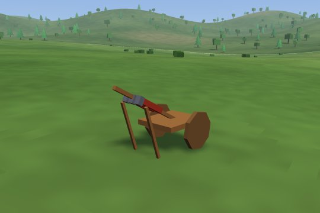
Congreve-Raketen Linienzeit · 1806
Bataillon: 4 Fahrzeuge · 224 Punkte/Goldje Fahrzeug: 56Britische Brandraketen der Napoleonischen Kriege: ungenau, aber laut und furchteinflößend (Kopenhagen 1807, Leipzig 1813).
Weitreichendes, sehr ungenaues Flächenfeuer – erschüttert Reiter und dichte Formationen.
- Fernkampf bis 700 m (110 Schaden je Treffer)
- Flächenwirkung: trifft alles im Umkreis von etwa 3 m
- Wehrlos, wenn Feinde herankommen – braucht Begleitschutz
- Mindestreichweite 40 m – direkt davor trifft er nichts
- Wacklige Moral – flieht schnell, wenn es schlecht läuft
- schnelle Reiterei, die die Bedienung überrennt; Gegenbatterie

Gatling-Kanone Linienzeit · 1865
Bataillon: 4 Fahrzeuge · 350 Punkte/Goldje Fahrzeug: 87,5Handgekurbeltes Mehrlaufgeschütz aus dem Amerikanischen Bürgerkrieg – der Vorläufer des Maschinengewehrs.
Ein Kugelhagel, der jede Kolonne aus Musketieren oder Reitern zerreißt.
- Fernkampf bis 350 m (40 Schaden je Treffer)
- Wehrlos, wenn Feinde herankommen – braucht Begleitschutz
- schnelle Reiterei, die die Bedienung überrennt; Gegenbatterie
Weltkriege (2)
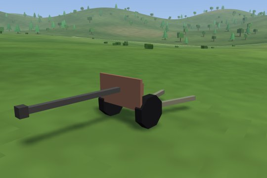
Panzerabwehrkanone Weltkriege · 1942
Bataillon: 4 Fahrzeuge · 1.032 Punkte/Goldje Fahrzeug: 258Die Pak 40 und ihre Verwandten waren im Zweiten Weltkrieg die wichtigste Waffe gegen Panzer.
Gut getarnt und tödlich gegen Panzer. Gegen Infanterie fast wirkungslos.
- Fernkampf bis 700 m (520 Schaden je Treffer)
- Flächenwirkung: trifft alles im Umkreis von etwa 1 m
- Durchschlägt Panzerung
- Wehrlos, wenn Feinde herankommen – braucht Begleitschutz
- Mindestreichweite 10 m – direkt davor trifft er nichts
- Langsam (1,8 m/s)
- schnelle Reiterei, die die Bedienung überrennt; Gegenbatterie
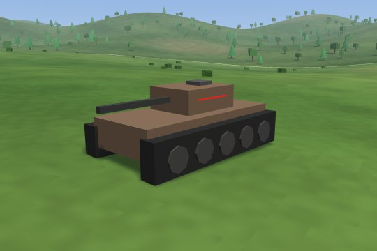
 Weltkriegspanzer Weltkriege · 1943
Weltkriegspanzer Weltkriege · 1943
Bataillon: 4 Fahrzeuge · 2.580 Punkte/Goldje Fahrzeug: 645
Kampfpanzer der 1940er Jahre – langsamer und schwächer gepanzert als moderne Modelle.
Durchbricht jede Linie aus Pferden und Musketen. Panzerabwehr und Artillerie sind seine Feinde.
- Fernkampf bis 600 m (450 Schaden je Treffer)
- Flächenwirkung: trifft alles im Umkreis von etwa 3,5 m
- Schwere Panzerung: Pfeile, Schwerter und Gewehrkugeln richten fast nichts aus
- Durchschlägt Panzerung
- Eiserne Moral – flieht spät und sammelt sich schnell
- Trampelt Fußvolk einfach nieder
- Schießt auch auf kurze Entfernung mitten im Gefecht
- Panzerabwehr, Minen und schwere Geschütze sind gefährlich
- Panzerfaust, Javelin, Panzerabwehrkanone, Minen, schwere Geschütze
Kalter Krieg (4)

Räumpanzer Kalter Krieg · 1965
Bataillon: 2 Fahrzeuge · 624 Punkte/Goldje Fahrzeug: 312
Pionierpanzer mit Räumschild: planiert Hindernisse, schiebt Barrikaden beiseite und reißt Mauern ein.
Bricht Mauern, Tore und Häuser in Sekunden auf und walzt Infanterie nieder. Keine Waffe auf Distanz.
- Schwere Panzerung: Pfeile, Schwerter und Gewehrkugeln richten fast nichts aus
- Durchschlägt Panzerung
- Gefährlich im Nahkampf (60 Schaden je Hieb)
- Eiserne Moral – flieht spät und sammelt sich schnell
- Stark gegen Mauern, Tore und Gebäude
- Trampelt Fußvolk einfach nieder
- Panzerabwehr, Minen und schwere Geschütze sind gefährlich
- Panzerfaust, Javelin, Panzerabwehrkanone, Minen, schwere Geschütze

Haubitze Kalter Krieg · 1975
Bataillon: 4 Fahrzeuge · 2.400 Punkte/Goldje Fahrzeug: 600Gezogene Feldartillerie, die Granaten kilometerweit verschießt.
Enorme Reichweite und Wirkung auf Flächen und Gebäude. Mindestabstand 150 m.
- Fernkampf bis 1.200 m (500 Schaden je Treffer)
- Flächenwirkung: trifft alles im Umkreis von etwa 7 m
- Durchschlägt Panzerung
- Wehrlos, wenn Feinde herankommen – braucht Begleitschutz
- Mindestreichweite 150 m – direkt davor trifft er nichts
- schnelle Reiterei, die die Bedienung überrennt; Gegenbatterie
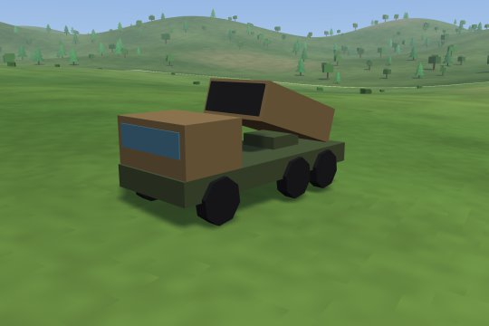
Raketenwerfer Kalter Krieg · 1980
Bataillon: 4 Fahrzeuge · 2.240 Punkte/Goldje Fahrzeug: 560Mehrfachraketenwerfer in der Tradition der „Stalinorgel“ des Zweiten Weltkriegs.
Ganze Salven auf eine Fläche – verheerend gegen Massen, dann lange leer.
- Fernkampf bis 900 m (220 Schaden je Treffer)
- Flächenwirkung: trifft alles im Umkreis von etwa 4 m
- Durchschlägt Panzerung
- Schnell (10 m/s)
- Wehrlos, wenn Feinde herankommen – braucht Begleitschutz
- Mindestreichweite 80 m – direkt davor trifft er nichts
- schnelle Reiterei, die die Bedienung überrennt; Gegenbatterie
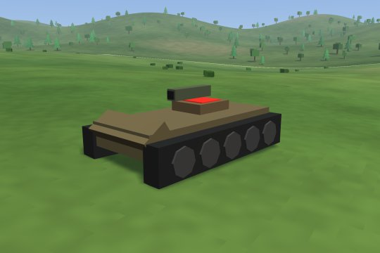
Raketenjagdpanzer Kalter Krieg · 1970
Bataillon: 4 Fahrzeuge · 2.560 Punkte/Goldje Fahrzeug: 640
Kettenfahrzeug mit Panzerabwehr-Lenkraketen – tief geduckt, schnell und tödlich auf große Distanz.
Jagt feindliche Panzer aus großer Entfernung. Gegen Infanterie wenig wirksam.
- Fernkampf bis 900 m (750 Schaden je Treffer)
- Flächenwirkung: trifft alles im Umkreis von etwa 1,5 m
- Gepanzert: einfache Waffen prallen meist ab
- Durchschlägt Panzerung
- Schnell (9,5 m/s)
- Trampelt Fußvolk einfach nieder
- Panzerabwehr, Minen und schwere Geschütze sind gefährlich
- Mindestreichweite 30 m – direkt davor trifft er nichts
- Wenig Munition (16 Schuss) – Lager oder Träger in der Nähe halten
- Panzerfaust, Javelin, Panzerabwehrkanone, Minen, schwere Geschütze
Gegenwart (1)
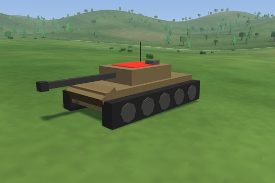
Kampfpanzer Gegenwart · 2000
Bataillon: 4 Fahrzeuge · 3.960 Punkte/Goldje Fahrzeug: 990
Moderner Kampfpanzer mit 120-mm-Glattrohrkanone und Verbundpanzerung.
Fast unverwundbar für alte Waffen – aber mit Geduld knackt ihn auch eine Axt. Katapulte sind ein echtes Problem.
- Fernkampf bis 1.000 m (600 Schaden je Treffer)
- Flächenwirkung: trifft alles im Umkreis von etwa 4,5 m
- Schwere Panzerung: Pfeile, Schwerter und Gewehrkugeln richten fast nichts aus
- Durchschlägt Panzerung
- Sehr zäh: 1.800 Lebenspunkte
- Schnell (8,5 m/s)
- Eiserne Moral – flieht spät und sammelt sich schnell
- Panzerabwehr, Minen und schwere Geschütze sind gefährlich
- Teuer – Verluste schmerzen
- Panzerfaust, Javelin, Panzerabwehrkanone, Minen, schwere Geschütze
Zukunft (4)
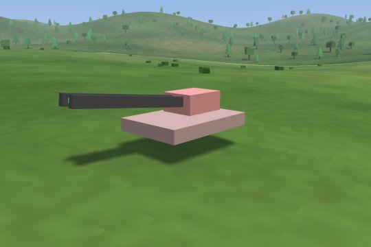
Railgun-Geschütz Zukunft · 2110
Bataillon: 2 Fahrzeuge · 765 Punkte/Goldje Fahrzeug: 382,5
Elektromagnetisches Geschütz, das Projektile mit mehrfacher Schallgeschwindigkeit verschießt.
Durchschlägt alles auf extreme Distanz – der Konter gegen Mechs und Schwebepanzer.
- Fernkampf bis 1.600 m (1.170 Schaden je Treffer)
- Flächenwirkung: trifft alles im Umkreis von etwa 1,5 m
- Gepanzert: einfache Waffen prallen meist ab
- Durchschlägt Panzerung
- Schwebt über dem Boden
- Panzerabwehr, Minen und schwere Geschütze sind gefährlich
- Mindestreichweite 40 m – direkt davor trifft er nichts
- Panzerfaust, Javelin, Panzerabwehrkanone, Minen, schwere Geschütze

Schwebepanzer Zukunft · 2140
Bataillon: 4 Fahrzeuge · 1.632 Punkte/Goldje Fahrzeug: 408
Antigrav-Kampffahrzeug der Zukunft, das über jedes Gelände gleitet.
Rasend schnell, feuert Plasma auch im Flug.
- Fernkampf bis 1.000 m (390 Schaden je Treffer)
- Flächenwirkung: trifft alles im Umkreis von etwa 2,5 m
- Schwere Panzerung: Pfeile, Schwerter und Gewehrkugeln richten fast nichts aus
- Durchschlägt Panzerung
- Sehr zäh: 1.950 Lebenspunkte
- Schnell (14 m/s)
- Eiserne Moral – flieht spät und sammelt sich schnell
- Panzerabwehr, Minen und schwere Geschütze sind gefährlich
- Panzerfaust, Javelin, Panzerabwehrkanone, Minen, schwere Geschütze
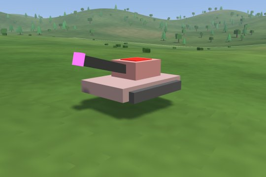
Plasmageschütz Zukunft · 2150
Bataillon: 2 Fahrzeuge · 714 Punkte/Goldje Fahrzeug: 357
Schwebende Artillerie der Zukunft.
Plasmakugeln schmelzen alles im Umkreis – Fahrzeuge, Mauern und Formationen.
- Fernkampf bis 1.200 m (546 Schaden je Treffer)
- Flächenwirkung: trifft alles im Umkreis von etwa 5 m
- Gepanzert: einfache Waffen prallen meist ab
- Durchschlägt Panzerung
- Schwebt über dem Boden
- Panzerabwehr, Minen und schwere Geschütze sind gefährlich
- Mindestreichweite 30 m – direkt davor trifft er nichts
- Panzerfaust, Javelin, Panzerabwehrkanone, Minen, schwere Geschütze

Mech Zukunft · 2160
Bataillon: 2 Fahrzeuge · 1.190 Punkte/Goldje Fahrzeug: 595
Tonnenschwerer zweibeiniger Kampfläufer mit zwei Plasmakanonen.
Zerstampft, was im Weg steht. Nur Plasma und Panzerabwehr kratzen an ihm.
- Fernkampf bis 800 m (208 Schaden je Treffer)
- Flächenwirkung: trifft alles im Umkreis von etwa 1,8 m
- Schwere Panzerung: Pfeile, Schwerter und Gewehrkugeln richten fast nichts aus
- Durchschlägt Panzerung
- Sehr zäh: 4.800 Lebenspunkte
- Eiserne Moral – flieht spät und sammelt sich schnell
- Trampelt Fußvolk einfach nieder
- Panzerabwehr, Minen und schwere Geschütze sind gefährlich
- Panzerfaust, Javelin, Panzerabwehrkanone, Minen, schwere Geschütze